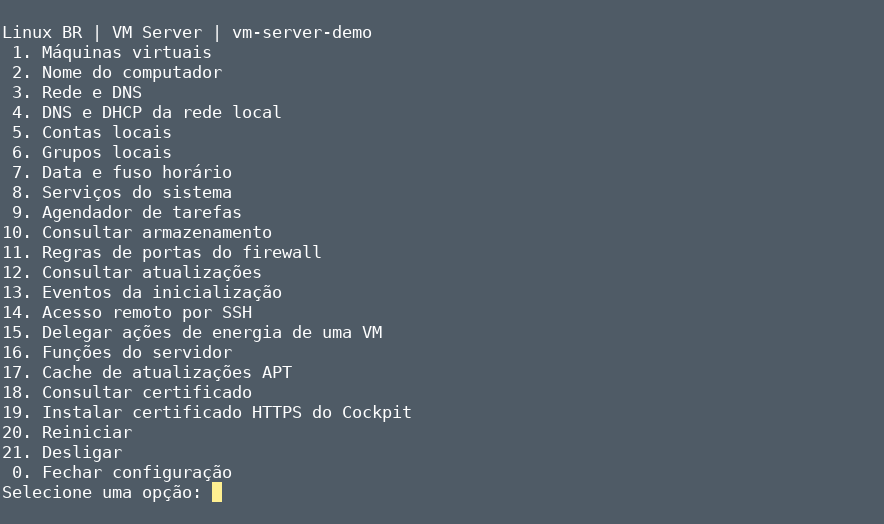

Na edição VM Server, use a janela Configuração do servidor para administrar a rede, contas, serviços e virtualização. No Bash da sessão gráfica, digite terminal para abrir outra janela ou linuxbr-console para reabrir o menu de configuração.
Digite ? para listar os guias. Use ? 1 para ver a ajuda da primeira opção ou ? armazenamento para pesquisar. No Bash, use linuxbr-console --ajuda armazenamento.
